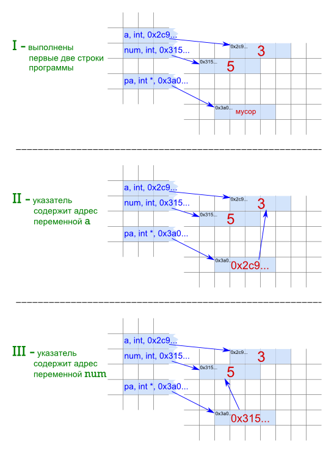

Мой обзор самого неттопа, общие впечатления и заметки о его производительности можно найти здесь — http://inf1.info/nettopiru. Теперь подробнее о том, какие Линуксы я на него пыталась установить, что удалось, а что нет; несколько слов о графических средах.
Основу моего старого компьютера составлял процессор Celeron с частотой в 2.2Ггц, видеокарта была интегрированной (компьютер 2003 года выпуска). Современные дистрибутивы Linux (с их GUI) он уже давно не тянул, но в остальном все мои запросы решал. К новому компьютеру было основное требование - бесшумность. Решила остановиться на неттопе. К сожалению, оказалось, что его бесшумность весьма условное понятие.
На неттоп устанавливались (с успехом и без) следующие дистрибутивы:
Xubuntu 11
Debian 6
Simply 6 (beta)
Simply 5.0.2
AltLinux Master 5.0.2
Fedora 15 (Gnome 3)
Fedora 15 (KDE)
У данной модели компьютера нет привода для дисков, поэтому установка производилась с флэшки. Для создания загрузочного устройства USB c Линуксами на борту пользовалась утилитами Unetbootin и YUMI (Your Universal Multiboot Installer). Следует отметить, что с помощью второй удавалось благополучно создавать мультизагрузочную флешку только с дистрибутивами и системными утилитами, упомянутыми в ее списке. Сторонние для нее дистрибутивы не распаковываются, а помещаются в специальный каталог как есть, и установить их легко и беззаботно не получится. Программа Unetbootin - более универсальная вещь для создания загрузочных девайсов из образов iso, но способна установить на usb-устройство только одну систему.
С флэшки не удалось установить Simply 5.0.2 и AltLinux 5.0.2. В первом случае возникала какая-то ошибка памяти. Во втором вроде бы шло все хорошо, но при установке пакетов появились сообщения об ошибках, и установка завершалась ничем. Simply 6.0 установилась благополучно, но почему-то на английском языке. Это бы ладно, но после установки драйвера nvidia слетел звук, да так, что колонки гудели, как будто ни к чему не подключены. Восстановить звук не удалось. Поэтому до лучших времен, дорогой AltLinux.
Xubuntu действительно удобна и при установке, и при использовании. Ее загрузчик подключил все Линуксы, установленные до этого. Следовательно, Xubuntu надо ставить последней, если не хочется или не умеется конфигурировать grub. Производительность Xubuntu на неттопе нормальная. Комфортно работать можно. Например, Blender работает шустро, а вот Inkscape несколько неповоротливо. В обоих программах почему-то не работают горячие клавиши.
В Debian стоило установить драйвер видеокарты, как графический режим перестал запускаться, выдается ошибка. Лечится удалением xorg.conf. Пока живем без драйверов.
Fedora Gnome 3. Вот это интерфейс! Афигеть. Жаль, что неудобно и непривычно. А так круто вообще. Отсутствие привычных вещей на своих местах пугает. А где кнопка выхода? Неужели все открывают терминал и пишут reboot? Прям как в магазине я и два продавца прыгали вокруг MeeGo и так и не нашли как отрубить это чудо техники.
Вместо этого была установлена Fedora KDE. При установке было следующее. Предложили выбрать язык. Выбираю русский. Система ставится на английском, весь интерфейс английский, а по умолчанию ввод с клавиатуры осуществляется на русском. То, что по умолчанию язык переключается двумя шифтами, как-то мы не догадались. Поэтому пароль и имя вводила циферками. После установке пришлось пользователя убить, другого добавить. Сейчас стоит красавица вся на английском такая, разделы дисков я почему-то вручную подключаю, пакеты с поддержкой русского языка сама доустанавливаю. Прям как в старые добрые времена. Inkscape работает быстрее, чем в Xubuntu. В нем и Blender горячие клавиши работают. Хотя впечатление о шрифтах и быстродействии самой системы хуже, чем у Xubuntu.
Короче в Linux на этом неттопе работать можно, причем в любой графической среде. Что касается самих этих сред, то есть ощущение, что со временем большую популярность набирают так называемые "легкие" среды типа Xfce (по сравнению с 2006-2008 годами). Красота и спецэффекты зачастую дополнительной функциональности не добавляют, а наоборот вводят в заблуждение и мешают работать (похоже всё функционально полезное, что надо было изобрести в этой области, уже изобрели давно). Видимо старый верный Gnome канет влету, т.к. тот же Xfce по общему впечатлению его переплевывает.
Цель этой статьи обобщить текущие знания по языкам C и Python в части особенностей работы с переменными. Статья содержит ряд догадок, поэтому содержательные комментарии приветствуются.
Как известно C относится к языкам со строгим определением типа переменных, а Python – с динамическим. В основном именно этим обстоятельством обусловлены различия при работе с памятью и, как следствие, с переменными.
В С мы обязаны сначала объявить переменную, а потом присваивать ей значение (хотя можно делать это в одном месте). В Python объявить переменную без присвоения ей значения невозможно в принципе, переменные как бы не объявляются вовсе, а сразу используются.
Когда в C мы объявляем переменные, то обязаны указывать их тип. Например, так: int base, float width. Тип переменной сообщает программе сколько памяти надо выделить под данные, и программа при обращении к переменной правильно может их прочитать (она читает определенное типом количество байт). В языке программирования C сведения о типе данных привязаны к переменным. Когда программа, созданная на C запускается, то все объявленные в ней переменные привязываются к определенным ячейкам памяти и уже не могут быть связаны с другими ячейками до конца выполнения программы.
В Python переменные не хранят информацию о типе данных, с которыми связаны. Сведения о типе привязаны к данным. Поэтому в Python не надо объявлять переменные заранее и не надо указывать их тип. Переменным все равно с чем их свяжут. Они появляются в момент присвоения им значения (count = 10, height = 1.45). Но, понятное дело, нельзя использовать в выражении переменную, которой не было присвоено значение ранее.
Можно сказать, в Python переменная в процессе выполнения скрипта может менять сколь угодно раз свой тип. На самом деле типа у нее просто нет.
Рассмотрим конкретный пример. Пусть есть вот такой код на языке C:
int qty; scanf("%d", &qty); qty = qty + 2;
Если вы не знаете язык, отмечу, что во второй строке у пользователя просто запрашивается целое число и присваивается переменной qty. Когда программа, содержащая такой код, запускается, то в памяти "бронируется" ряд ячеек под эту переменную. Устанавливается связь между именем qty и первой ячейкой блока памяти, отведенного под данные. Программа анализирует тип переменной и получат сведения, что ее значение простирается на четыре байта (в языке C integer обычно имеет длину в 4 байта). Переменная qty на все время выполнения программы прикреплена к определенным ячейкам. Нельзя оторвать имя qty от этих ячеек и связать с другими. Мы можем только менять содержимое определенных ячеек. Далее сначала запрашивается число у пользователя и кладется в qty, пусть это будет число 5 (понятно, что в памяти хранится двоичный код, но для наглядности на картинке десятичные цифры), затем это число увеличивается на два и содержимое ячеек переписывается.
Еще раз отметим, что в данном случае память выделяется в момент запуска программы и ее объем не меняется в процессе выполнения. Не меняется и место: где выделилось, там и лежит.
Куда интересней обстоит дело с переменными-указателями (будем далее называть их просто указатели, чтобы отличать от обычных переменных).
int a = 3, num = 5; int *pa; // это указатель pa = &a; // записали адрес данных переменной a printf("%d ", *pa); // получим 3 pa = # printf("%d ", *pa); // получим 5
Да, указатели конечно тоже привязываются к определенным ячейкам. Под любой указатель (независимо от типа) в языке C выделяется 4 или 8 байтов (зависит от операционной системы). В указателе хранится адрес области памяти. А тип указателя сообщает на сколько простирается память определенного значения под этим адресом. Если в процессе выполнения программы сначала в указателе хранился один адрес, а затем другой, то получается интересная ситуация, когда с помощью одного указателя мы можем обращаться то к одному участку памяти, то к другому:

Если еще учесть, что в языке C есть специальные функции позволяющие захватывать участки памяти, то мы можем хранить в указателе адрес ранее недоступной памяти. т.е. динамически захватывать и освобождать память.
char *pch; pch = (char *) malloc(10); pch = "hello"; pch = NULL;
В Python все переменные являются ссылками. Предположим, что они могут менять свои адреса "на корню", т.е. там, где хранится информация о переменных.
Все осложняется тем, что в Python есть изменяемые и неизменяемые типы данных. Числа и строки — это неизменяемые данные, а списки и словари — изменяемые. Разница не всегда очевидна, когда пытаются объяснить это так: строку и число мы не можем изменить, а список запросто. Например, a = "Hello". Попытка сделать так: a[0] = "h", чтобы получить "hello" вызовет ошибку. Но если есть список b = ['a', 'b', 'c'], то выражение b[0] = 'z' пройдет гладко, и b будет содержать ['z', 'b', 'c'].
Однако значение переменной a можно изменить так: a = "hello". На самом деле происходит следующее. Создается новый объект "hello", переменная привязывается к нему, а старый объект остается на прежнем месте. Поскольку на него больше не ссылается ни одна переменная, то он уничтожается.
a = "Hello" a = "hello" a = 12
Со списками, как изменяемыми объектами, несколько иная история. Предположим, переменная хранит сведения о том, где находится информация о списке. А сам список уже хранит сведения о том, как разбросаны в памяти его элементы. Когда меняется состав и содержание элементов списка, переменной все равно, ей положено знать, только где начинается список. Поэтому для переменной, а значит и для нас, список - изменяемый объект, т.к. переменная не устанавливает новую связь с другим объектом, а продолжает указывать на прежний.
nums = [100, 38] nums[0] = 89 nums.append(26.5)
В Python есть еще одна интересная вещь. Все изменяемые и некоторые простые значения неизменяемых объектов (0, 1 и т.п.) при присваивании их другим переменным не копируются, а просто связываются с еще одной переменной. В результате получаем множество ссылок на один объект. Эти объекты существуют до тех пор, пока есть хотя бы одна ссылка на них. Если на один изменяемый тип ссылается несколько переменных, то его изменение по одной из них можно увидеть через другую. А вот если тип неизменяемый, то изменение значения одной переменной создает новый объект, а другая переменная остается связанной с прежним значением.
dt = [1, 'a'] n = 0 mdt = dt m = n mdt[1] = 'b' m = 100 del dt
Следует отметить, что в C адрес определенного места в памяти также может содержаться в качестве значения нескольких указателей. В результате изменение данных в этой памяти с помощью одного указателя можно будет увидеть с помощью другого.